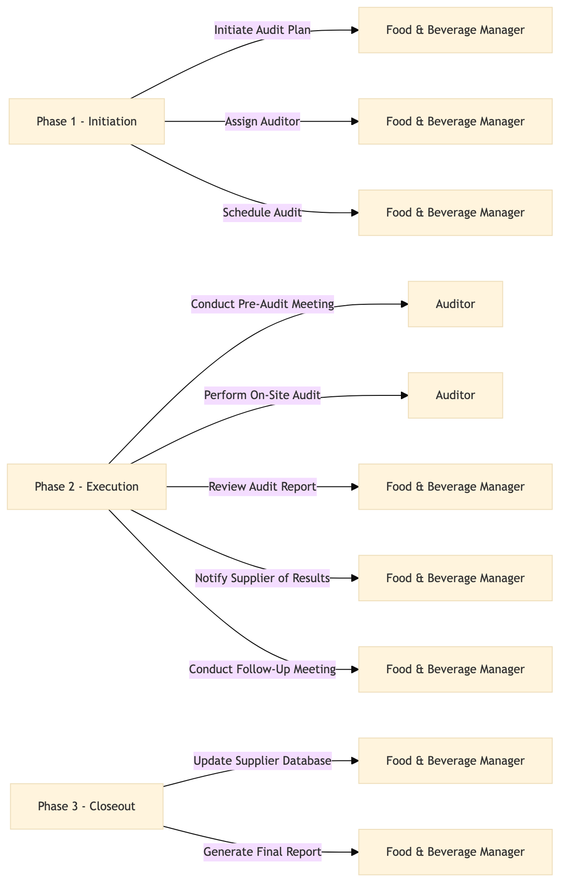

| Role | Steps |
|---|---|
| Food & Beverage Manager | 1.1 1.2 1.3 2.3 2.4 3.1 3.2 |
| Auditor | 2.1 2.2 |
| Step | Name | Role | System | Input | Output | KPI | Dec? | Exc? | Pain Point / Risk |
|---|---|---|---|---|---|---|---|---|---|
| 1.1 | Initiate Audit Plan | Food & Beverage Manager | Oracle OPERA Cloud | Audit checklist template | Customized audit plan | Less than 2 hours | N | Y | Inconsistent application of quality standards across suppliers |
| 1.2 | Assign Auditor | Food & Beverage Manager | Oracle OPERA Cloud | List of auditors and their availability | Auditor assignment | Less than 30 minutes | N | Y | Difficulty in finding available auditors |
| 1.3 | Schedule Audit | Food & Beverage Manager | Oracle OPERA Cloud | Supplier availability and audit plan | Scheduled audit dates | Less than 1 hour | N | Y | Conflicts in supplier schedules |
| 2.1 | Conduct Pre-Audit Meeting | Auditor | Oracle OPERA Cloud | Audit plan and checklist | Pre-audit meeting notes | Less than 30 minutes | N | Y | Supplier reluctance to disclose information |
| 2.2 | Perform On-Site Audit | Auditor | Oracle OPERA Cloud | Audit checklist and pre-audit notes | On-site audit report | Less than 4 hours | N | Y | Challenging to maintain consistency in scoring criteria |
| 2.3 | Review Audit Report | Food & Beverage Manager | Oracle OPERA Cloud | On-site audit report | Reviewed audit report with comments | Less than 1 hour | N | Y | Overlooking critical issues due to time constraints |
| 2.4 | Notify Supplier of Results | Food & Beverage Manager | Oracle OPERA Cloud | Reviewed audit report | Notification email and follow-up meeting schedule | Less than 30 minutes | N | Y | Miscommunication leading to misunderstandings |
| 2.5 | Conduct Follow-Up Meeting | Food & Beverage Manager | Oracle OPERA Cloud | Notification email and follow-up meeting schedule | Follow-up meeting minutes | Less than 2 hours | N | Y | Supplier resistance to making changes |
| 3.1 | Update Supplier Database | Food & Beverage Manager | Oracle OPERA Cloud | Follow-up meeting minutes and reviewed audit report | Updated supplier database with performance ratings | Less than 1 hour | N | Y | Data entry errors in the system |
| 3.2 | Generate Final Report | Food & Beverage Manager | Oracle OPERA Cloud | Updated supplier database and follow-up meeting minutes | Final audit report with recommendations | Less than 1 hour | N | Y | Omitting important details in the final report |
Supplier Quality Auditing is a process conducted by Marriott International's Food & Beverage Operations team to ensure that suppliers meet quality standards. This audit helps in maintaining high culinary standards and guest satisfaction.